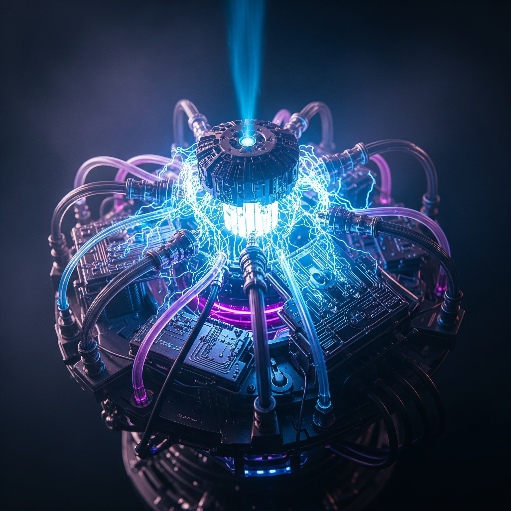

エネルギー機械コースってどんなところ？
大阪高専のエネルギー機械コースは、未来の社会を支える「エネルギー」と「機械」の融合分野を深く探求する専門コースです。地球温暖化や資源枯渇といった現代社会の課題に対し、持続可能な解決策を生み出すための最先端技術と実践的な知識を習得します。私たちは、単なる知識の習得に留まらず、自ら考え、創造し、社会に貢献できる次世代の技術者・研究者を育成することを目指しています。
このコースでは、高度な専門知識はもちろんのこと、問題発見能力、論理的思考力、そしてチームで協力するコミュニケーション能力を養うことに重点を置いています。未来のエネルギーシステムや革新的な機械の開発に興味がある皆さんを心より歓迎します。
コースの特徴を見るコースで学べる専門分野

このコースでは、以下の専門分野を深く掘り下げて学習し、実践力を高めます。
- 熱・流体工学: エネルギー変換の根幹をなす熱力学、伝熱工学、流体力学の基礎から応用までを学びます。ガスタービン、ボイラー、熱交換器、ポンプなどの設計・解析を通じて、エネルギー効率の最大化と環境負荷低減のための技術を習得します。シミュレーション技術も活用し、複雑な現象を可視化・解析する能力を養います。
- 機械設計・制御: 高性能かつ安全な機械システムを創造するための設計理論、材料力学、振動工学、精密加工技術を習得します。さらに、メカトロニクスやロボット制御、自動化技術を学び、スマートファクトリーや次世代モビリティなど、幅広い分野で活躍できる設計・開発能力を身につけます。CAD/CAMを用いた設計演習も豊富です。
- 新エネルギー技術: 太陽光発電、風力発電、地熱発電、バイオマスエネルギー、燃料電池、水素エネルギーなど、多岐にわたるクリーンエネルギー源の原理と最新技術を学びます。これらのエネルギーシステムを社会実装するための課題や将来性についても深く考察し、持続可能な社会構築への貢献を目指します。
- 環境・省エネルギー: 地球環境問題に対する技術的アプローチとして、エネルギーの効率的な利用、未利用エネルギーの回収、排熱利用、CO2排出量削減技術などを学びます。省エネルギー診断やエネルギーマネジメントシステム（EMS）の設計を通じて、企業や社会全体のエネルギーコスト削減と環境負荷低減に貢献する専門知識を身につけます。
- AI・IoT応用: 機械学習、深層学習、データサイエンスといったAI技術と、センサーネットワーク、クラウド連携などのIoT技術を、エネルギー機械システムに統合する方法を学びます。スマートグリッド、予知保全、自律型ロボットなど、AIとIoTを活用した次世代のスマートシステム開発に必要なプログラミングスキルと応用力を養います。
座学だけでなく、最新設備が整った実験室での豊富な実験、グループでのPBL（Project Based Learning）形式の実習、そして教員の指導のもとで自らテーマを設定し研究を進める卒業研究を通じて、実践的な問題解決能力と創造力を身につけることができます。君たちの「ものづくり」への情熱と、未来の社会をより良くしたいという強い思いを、大阪高専エネルギー機械コースで形にしてみませんか？
大阪高専の公式サイトはこちらもっと詳しく知りたい方へ
大阪高専エネルギー機械コースのカリキュラム、卒業後の進路、入試情報、学費、奨学金制度など、ご不明な点がございましたら、お気軽にお問い合わせください。経験豊富な教員や在学生が、皆さんの疑問にお答えします。
また、毎年開催されるオープンキャンパスや学校説明会では、コースの施設見学や模擬授業体験、個別相談会を実施しています。実際に高専の雰囲気を肌で感じ、エネルギー機械コースの魅力を直接体験できる絶好の機会です。ぜひご家族やご友人とご一緒にご参加ください！詳細は大阪高専の公式サイトでご確認ください。
お問い合わせ先:
大阪高専 入学案内係
電話: XXX-XXX-XXXX (受付時間: 平日 9:00-17:00)
Email: info-em@osaka-kosen.ac.jp